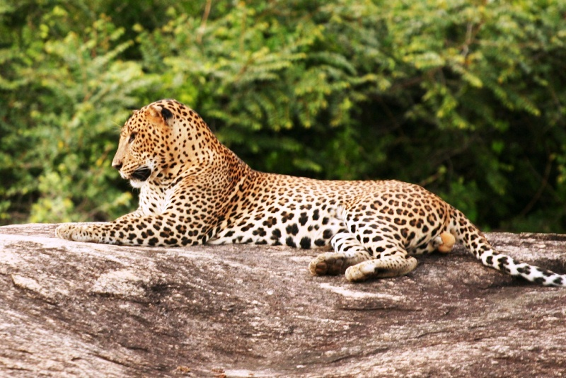
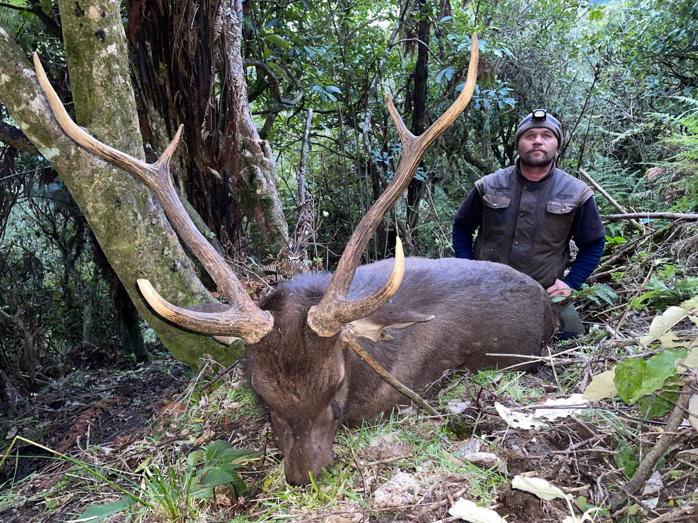
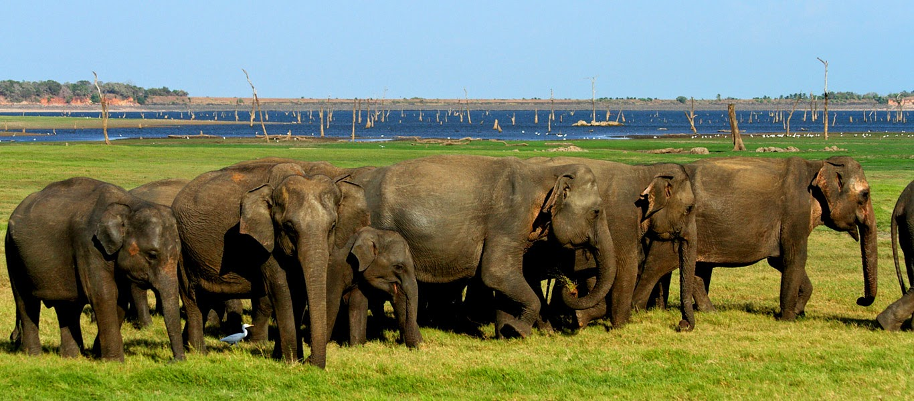

Located in south-west Sri Lanka, Sinharaja is the country's last viable area of primary tropical rainforest. More than 60% of the trees are endemic and many of them are considered rare. There is much endemic wildlife, especially birds, but the reserve is also home to over 50% of Sri Lanka's endemic species of mammals and butterflies, as well as many kinds of insects, reptiles and rare amphibians.
Horton Plains is a beautiful, stark world with excellent hikes in the shadows of Sri Lanka’s second- and third-highest mountains, Kirigalpotta (2395m) and Totapola (2357m). The ‘plains’ form an undulating plateau over 2000m high, covered by wild grasslands and interspersed with patches of thick forest, rocky outcrops, filigree waterfalls and misty lakes. The surprising diversity of the landscape is matched by the wide variety of wildlife, although many of the larger animals are very elusive. Birdwatchers will be well rewarded.
Minneriya National Park is located in Sri Lanka’s North Central Province, 182 kilometers from Colombo. The major cities closest to Minneriya National Park are Habarana and Polonnaruwa. The renovated, vast ancient Minneriya Rainwater Reservoir that irrigates a considerable area of the district of Polonnaruwa is the focal point of the Minneriya National Park. Minneriya National Park, which is part of the elephant corridor that connects Kaudulla and Wasgamuwa National Parks, provides visitors with the opportunity to see elephant herds all year. May to October is the best period to visit Minneriya National Park in view of the world-famous Great Elephant Gathering of the Asian wild elephants.
| Wild park | Animal to be seen | facts about it | Sinharaja forest |  leopard | The Leopard (Panthera pardus, Linnaeus, 1758) is the most secretive and elusive of
the large carnivores, and also the shrewdest. |
horton park |  Sambar Deer | The Sri Lankan sambar or Indian sambar (Rusa unicolor unicolor), also known as ගෝනා (gōṇā) in Sinhala, is a subspecies of the sambar that lives
in India and Sri Lanka. British explorers and planters referred to it, erroneously, as an elk,[2] leading to place names such as Elk Plain. |
|---|---|---|
| Minneriya National Park |  Elephants | The Sri Lankan subspecies is the largest and also the darkest of the Asian elephants, with patches of depigmentation—areas with no skin color—on its ears, face, trunk and belly. Once found throughout the tear-shaped island at the bottom of India’s southern tip, these elephants are now being pushed into smaller areas as development activities clear forests and disrupt their ancient migratory routes. |